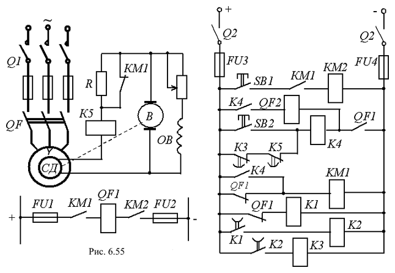

6.6.5.2. Управление синхронным двигателем
При управлении синхронным двигателем СД осуществляется пуск, отключение, форсировка возбуждения и гашение магнитного поля в аварийных режимах. Схема управления высоковольтным СД с постоянно включенным возбудителем В (генератором постоянного тока параллельного возбуждения) на валу показана на рис. 6.55.
При пуске включается рубильник Q1 и выключатель Q2; подаётся напряжение на блокировочное реле К1 и контактор гашения магнитного поля КМ1, который размыкает свой контакт КМ1, шунтирующий сопротивление гашения R. Одновременно замыкается контакт КМ1 в цепи контактора КМ2. Далее замыкается контакт К1, срабатывает реле К2 и подаётся напряжение на реле К3, которое при срабатывании размыкает свой контакт в цепи промежуточного реле К4.

После нажатия кнопки SB1 ("Пуск") включается контактор КМ2, который подаёт напряжение на включающую катушку QF1 высоковольтного выключателя. Последний подключает своими контактами QF статор двигателя к сети, отключает контактор КМ1 и реле К1. Начинается разгон двигателя. Одновременно замыкается контакт QF1 в цепях реле К4 и катушки QF2, но реле К4 не срабатывает, т. к. контакт К3 уже разомкнулся. Иначе включилось бы реле К4, т. к. реле гашения магнитного поля К5 ещё не успеет к этому моменту времени разомкнуть свой контакт. Это привело бы к включению катушки QF2 и отключению статора двигателя от сети.
После этого теряет питание реле К2, т. к. реле К1 было отключено, и с замедлением размыкает свой контакт К2. За ним с замедлением отключается реле К3, и замыкается его контакт К3 в цепи реле К4, которое снова не получит питания, т. к. реле К5 уже успеет разомкнуть свой контакт К5. На этом заканчивается работа аппаратов управления. Синхронный двигатель с асинхронной частотой вращения вала втягивается в синхронизм.